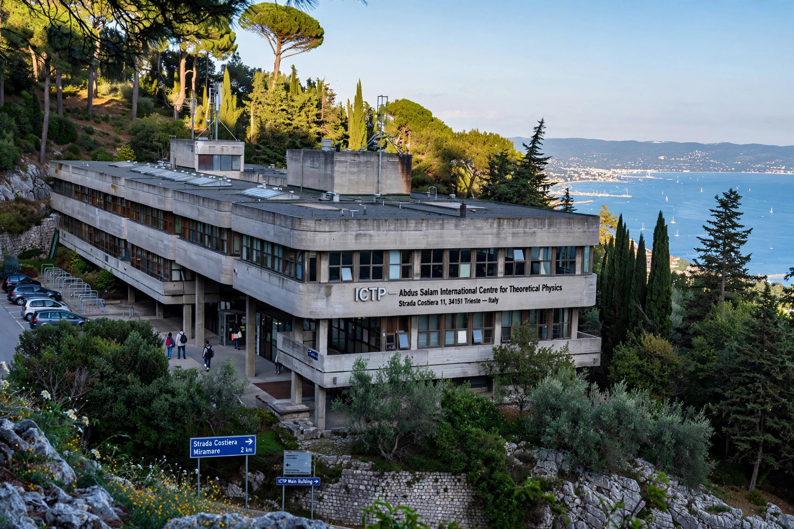

| Established | 1964 |
|---|---|
| Founder | Abdus Salam |
| Location | Miramare, Trieste, Italy |
| Type | Research institute |
| Operated by | IAEA and UNESCO, with the Italian government |
The Abdus Salam International Centre for Theoretical Physics (ICTP) is a research institute for physical and mathematical sciences located in Miramare, near Trieste, Italy. Founded in 1964 by the Pakistani physicist Abdus Salam, it operates under a tripartite agreement between the Italian Government, UNESCO, and the International Atomic Energy Agency (IAEA).
The ICTP was created to provide scientists from developing countries with the continuing education and skills they need to sustain long and productive careers and to counter the scientific brain drain. It hosts schools, workshops and conferences throughout the year in fields including high-energy physics, condensed matter, mathematics, earth system physics and quantitative life sciences, and runs a associates programme that allows researchers from developing nations to visit regularly while keeping their posts at home. Each year the centre welcomes thousands of visiting scientists from well over a hundred countries.
The ICTP administers the Dirac Medal, first awarded in 1985, one of the most prestigious prizes in theoretical physics, given to scientists who have made significant contributions to theoretical physics but have not yet received a Nobel Prize. It also awards the ICTP Prize and, with the International Mathematical Union, the Ramanujan Prize for young mathematicians from developing countries.
Salam directed the centre from its founding until 1993. After his death in 1996, the institute was renamed in his honour. A partner institute, ICTP-SAIFR, was established in São Paulo, Brazil, as the first regional centre of excellence. The campus sits in the Miramare park near the Miramare Castle on the Gulf of Trieste.